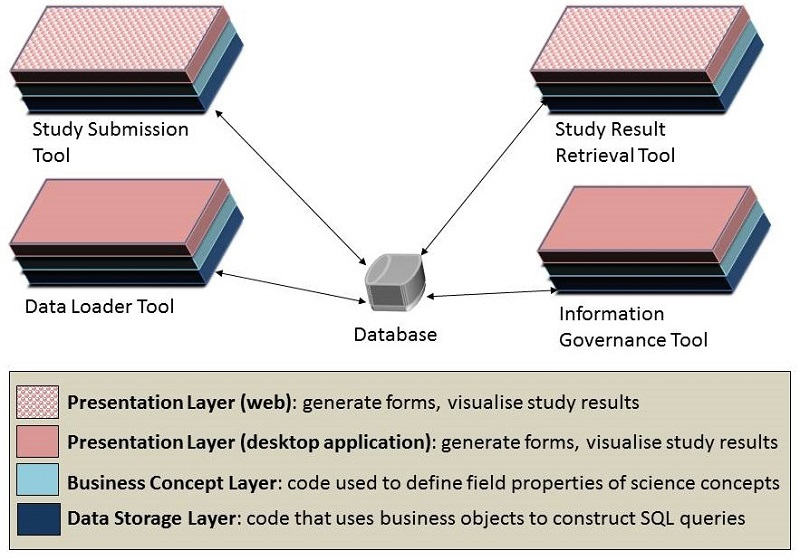

|
|
|
|
|
|
|
The first goal of RIF design is to divide a large, complex feature set in a way that best benefits the needs of different end users and which promotes division of labour on the development team. Whereas RIF v3.0 supported different types of users with a single application, RIF v4.0 will rely on a collection of related tools which target different user roles and tasks. Developing specialised tools allows the user interface and learning materials of each tool to be streamlined for a specific audience. By separating the concerns of each type of user and by establishing how the tools would interact with one another, the design will provide project modules that promote a clean division of labour amongst the developers.
The most reasonable dividing line of features exists between those needed by the scientists and those needed by the RIF managers. Epidemiologists, GIS scientists and statisticians may be interested in creating and running studies and visualising the results. RIF managers need to be able to load geospatial and health data into the database. They also need the ability to inspect either the study question or the study answer to determine whether the results are too sensitive to release or not. Figure "General Design-1" shows a tool suite that supports these tasks:

Fig. General Design-1: Old vs new designs of the Rapid Inquiry Facility. In the new version, the feature
set is supported by four tools rather than one.
Creating a study and viewing its results are related but different activities. Creating a study focuses on data entry, whereas retrieving results focuses on maps, graphs and ways of visualising combinations of health and geographic information. The administrative tasks of loading new data into the RIF database and evaluating the data protection implications of studies are another example of very different tasks being supported for the same role.
General Design-1 : Support the feature set with a suite of interacting tools. They will include: a study submission tool, a study result retrieval tool, a data loader tool and an information governance tool.
Another way to divide the software project is by the computational theme of each task. For any user feature, there is usually a common sequence of operations
These tasks roughly coincide with areas of expertise on the team. Federico Fabbri has done extensive work designing web-based geospatial applications that support data entry and data visualisation of results. Much of his work has related to creating front-end displays. Peter Hambly has spent years developing the RIF database schema and Margaret Douglass has extensive experience writing database scripts that perform the kinds of data extraction tasks that the RIF is supposed to support. Both have experience in developing back end code. I've spent years writing reusable software services and Nan Lin has had a background of testing complex scientific modeling code. Both of us have developed code which can mediate communication between front end displays and back end databases. The computational themes and the skill sets invite us to use a common three-tiered architecture for design.
General Design-2 : Organise code using a common three tier architecture that has the following layers: a presentation layer for managing GUI code; a business concept layer for managing the way business concepts are expressed in the system; and a data storage layer for managing the task of reading data from or writing data to the database.
In this design, the presentation layer contains all the code that is used to create electronic forms, graphs and reports. It is concerned with supporting guided data entry features and restricting user actions to those which are necessary for supporting features. In the tool suite, both the Study Submission Tool and the Study Result Viewer Tool will be developed as web applications. The Data Loader Tool and the Information Governance Tool will be developed as desktop applications. A desktop version of the Study Submission Tool was developed to facilitate rapid prototyping and will remain as a tutorial example for developers who want to build new client applications. Web-based front-ends will use JavaScript and HTML5, whereas desktop applications will be coded using Java Swing.
The business concept layer contains classes which describe the concepts that should be meaningful to scientists. The code contains cardinality information that relates concepts with one another. The layer also contains validation code that checks for data type errors, out-of-bounds values and illegal combinations of field values. The data storage layer contains the code that is used to generate SQL queries, manage database resources, and do validation checks for non-existent or duplicate items in the database. Both the business concept and data storage layers will be coded using Java.

Fig. General Design-2: Basic Three Tier Architecture.
Interactions between layers should be strictly controlled so that they can maintain their separation of concerns. Code in the presentation layer will typically extract field values from electronic forms to produce business objects. The business objects validate the form data as much as they can. The objects are then used within the data storage layer to assemble SQL queries. The queries are executed and the query results are assembled into business objects. The objects are passed from the business concept layer to the presentation layer, where the results are rendered in electronic forms. In this scenario, the business concept layer strictly mediates communication between the presentation and data storage layer.
General Design-3 : Ensure that the presentation layer only interacts with the data storage layer via the business concept layer. Never let presentation and data storage layer have direct communication with one another.
The code base needs to support actions as well as business concepts that can be used by the presentation layer. In order to strictly enforce the access protocol between layers, the data storage layer should be completely hidden and inaccessible to code in the presentation layer. Therefore, the business concept layer needs to publish service APIs which describe methods that front end client applications can use. The input parameters and return values for these methods should be expressed in terms of business concepts and simple data types.
The service APIs effectively hide the rest of the code base from the presentation layer. From the perspective of the front end applications, it should be irrelevant which classes are implementing the interfaces, how database queries are exectued and which database is being used. The set of services that mediate communcation between the databases and the front end applications together constitute the middleware of the RIF project.
The middleware provides a centralised mechanism for handling requests from front end applications. Using middleware, code used to support tasks such as validation, auditing, security checks and exception handling can also be centralised and be reused by all the client applications.
By limiting access to the code base to service APIs, the middleware reduces the number of execution paths that could be exercised during operation. Controlling execution paths in this way helps minimise potential problems relating to concurrency and malicious code attacks. It also allows testing efforts to be economised because test cases don't have to be developed for pathways that will never occur.